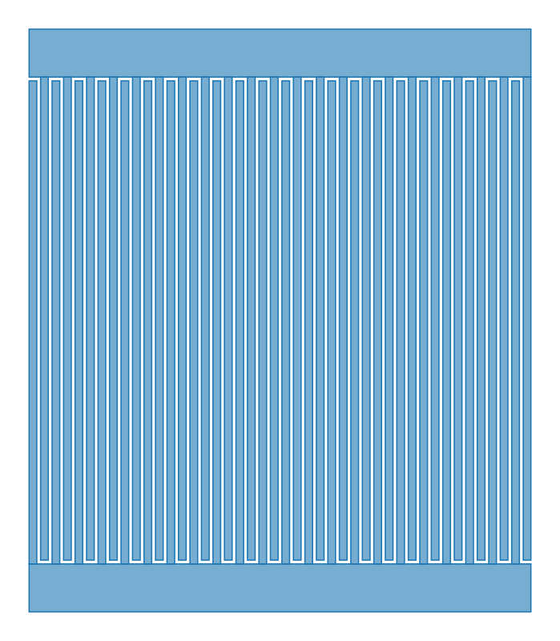

One deterministic core
The Python core owns geometry and numerical behavior. The future desktop shell exposes those same operations.
OPEN ENGINEERING · QUANTUM & RF
A research workbench for inspectable geometry, explicit assumptions, and simulation results you can trace back to their source.
Interactive design preview · Native macOS app in development

Repository benchmark 01 · Geometry illustration, not proof of electrical performance.
THE EVIDENCE RIBBON
Intent, parameters, units and a specific design revision.
Inspect dimensions, layers and ports against explicit rules.
Separate prepared files from a solver that actually ran.
See the method, tolerance and missing evidence before trusting a number.
DESIGNED FOR RESEARCH
Move between intent, layout and retained runs. Inspect the exact inputs behind a result, then make the next revision without losing the previous one.
Inspect a real CPW layout →The Python core owns geometry and numerical behavior. The future desktop shell exposes those same operations.
Analytical estimates retain their assumptions and references. A paper citation supports a method; it does not validate a new device.
Keep inputs, verification reports and solver artifacts together. Missing data stays visible.
PROJECT STATUS · SEPTEMBER 2026
Available from source. v0.3.1 publication to PyPI is pending publisher configuration.
Read the guidebook ↗Design in progress. PySide6 shell planned; signing, notarisation, installed workflows and verified updates are pending.
Explore the design →This site is a static preview with retained artifacts. Hosted solvers and Windows/Linux desktop apps are not yet delivered.
View the integration checklist ↗START WITH WHAT WORKS TODAY
After cloning the repository and installing its Python dependencies with uv sync, run the existing CPW example. This generates artifacts; it does not establish EM validation.
uv run textlayout generate \
examples/benchmarks/02_cpw_50ohm/layout.json \
--out out/cpwRun from the repository root. Inspect the generated analytical report and verification files.